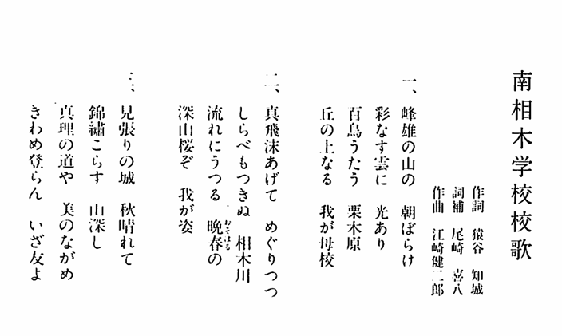

ごあいさつ
昭和40年に南相木中学校を卒業してから長い年月が経ちましたが、豊かな自然の中で仲間と過ごした日々は今も心に残っています。
このホームページは、「山河会」と「35会」の仲間が集い、いつでも思い出を語り合える「第二の我が家」です。ここが懐かしいふるさとを思い出し、絆を深められる場所となれば幸いです。
🌸 特設「ふるさとの友よ 音楽館」のご案内
私たちの永遠の友情を歌い継ぐテーマ曲『ふるさとの友よ』をはじめ、ふるさとの情景が思い浮かぶ曲をいつでもゆっくりとお楽しみいただける、専用の特設サイト「ふるさとの友よ 音楽館」を開設いたしました。
下記のボタンを押していただくとお聴きいただけます。

冬のダルマストーブの温もり、競い合って雑巾がけした長い廊下。私たちの人生の大切な原点が、今もこの学び舎に息づいています。

2026年7月15日
67名のうち16名の仲間が再び一堂に会しました。何十年経っても、顔を合わせればすぐにあおの頃のニックネームに逆戻り。お互いの元気な笑顔を讃え合いました。
南相木小学校 校歌
懐かしい校歌をお聴きいただけます

同級会事務局からのお知らせ
- ● 思い出の写真やお便りを募集中です。下の入力フォームから中島義健宛てにお気軽にお寄せください。
- ● 住所の変更や、お仲間の新しい連絡先が分かりましたら、中島義健までメールでお教えいただけますと幸いです。
思い出やお便りを送る入力フォーム
送信ボタンを押すと、お使いのメールアプリ（Gmailや携帯メール等）が自動起動し、中島義健宛てにメールが届きます。
中島義健作成のYouTube動画コーナー
中島義健が、まごころを込めて制作・撮影した、思い出のメロディや歴史探訪、そして日々の温かい暮らしのYouTube動画です。ボタンを押すと動画が開き、ゆっくりとご鑑賞いただけます。
🔒 同級会員の皆様だけの「安心な限定公開ホームページ」です
このホームページは、検索サイト（GoogleやYahooなど）の検索結果には一切登録されない、アドレスをご存知の「山河会・35会」の会員の皆様だけが閲覧できる安心なウェブサイトです。どうぞ安心して、懐かしい思い出や近況の交流をお楽しみください。